Lookbook, 22:00 to 06:0014 frames · shot on the walk home
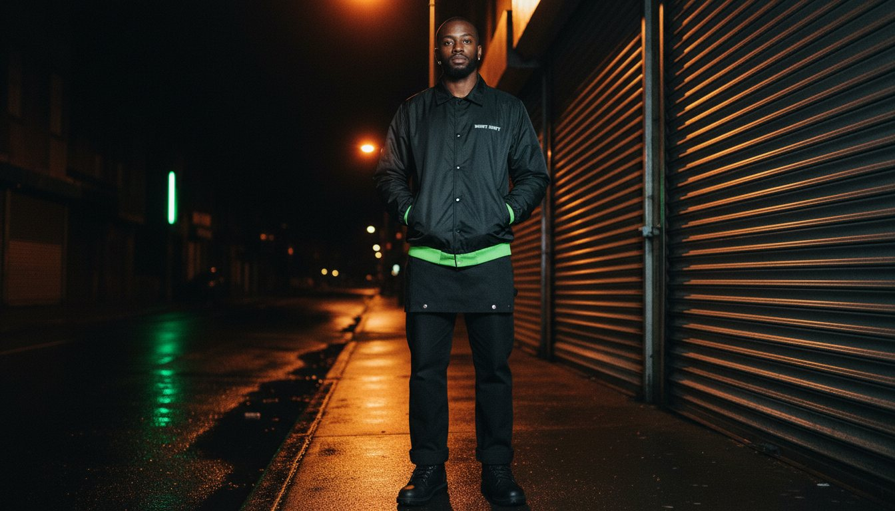
22:00 · Coach Jacket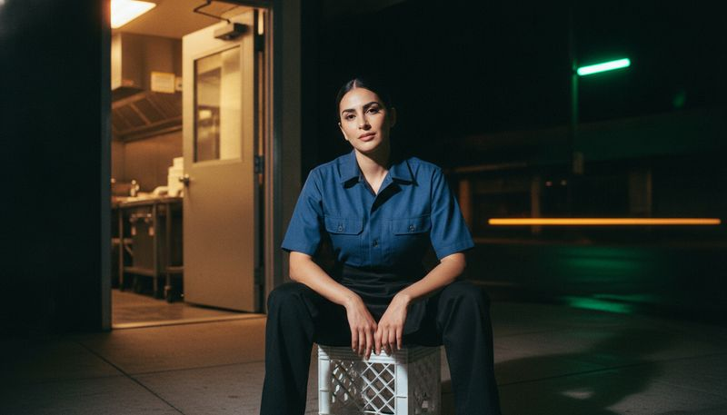
04:00 · Apron Pant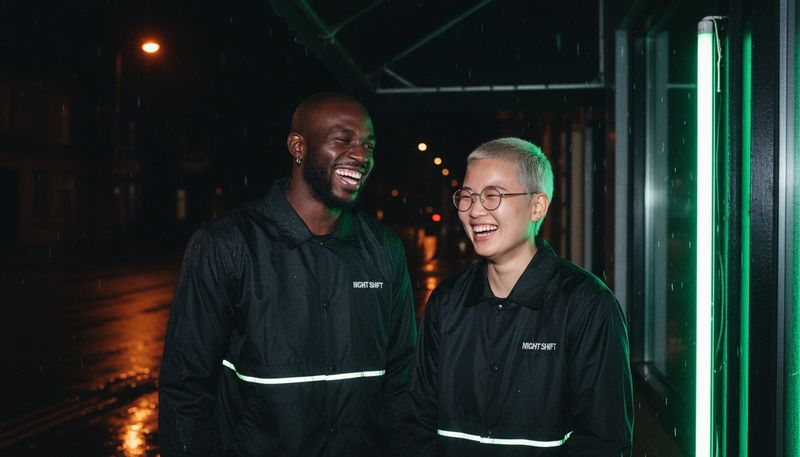
Coach Jacket, two ways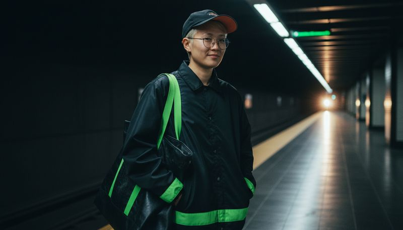
02:00 · 2AM Cap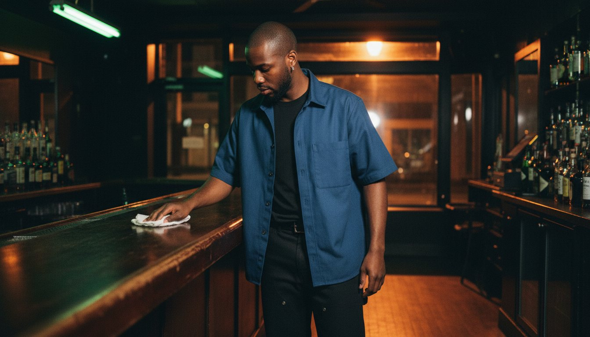
00:00 · Pass Shirt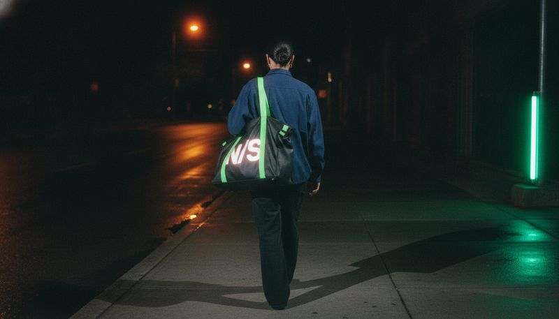
06:00 · Tip Jar Tote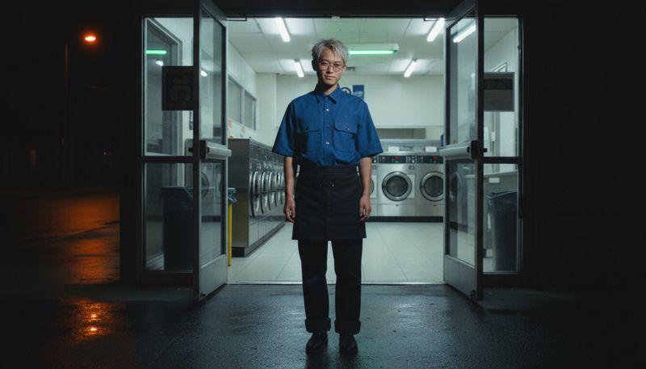
00:00 · Pass Shirt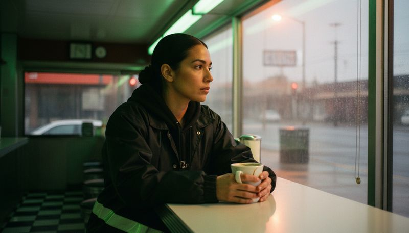
Coach Jacket, diner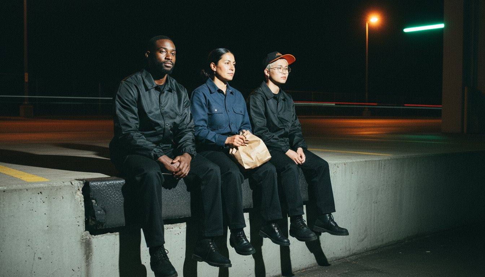
End of shift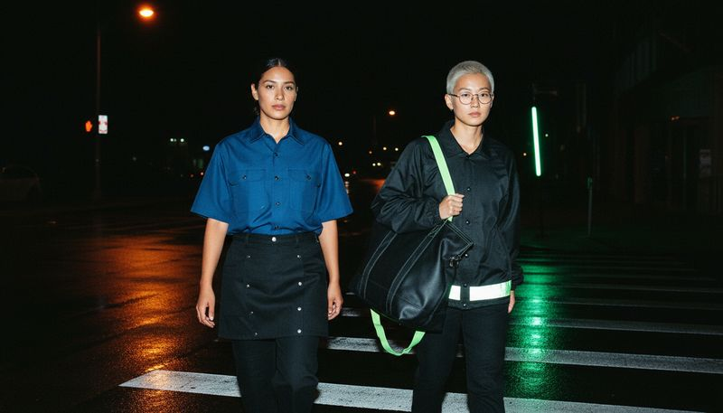
Pass Shirt, Coach Jacket 02:00 · 2AM Cap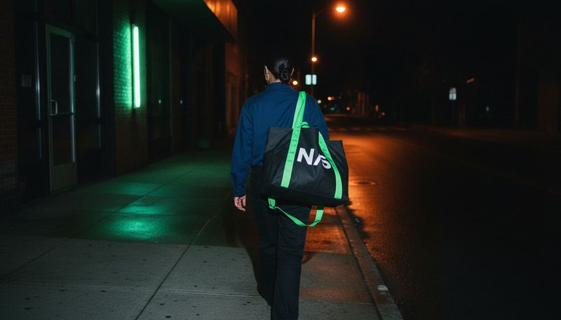
06:00 · Tip Jar Tote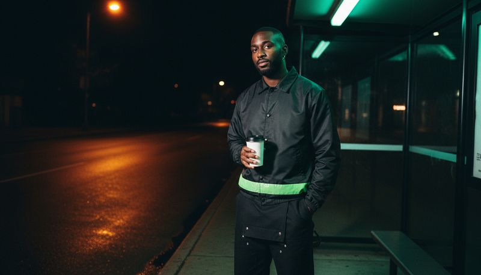
Coach Jacket, bus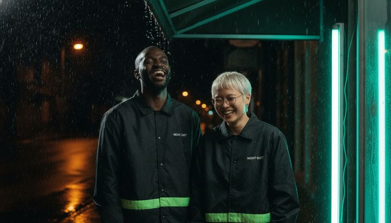
Coach Jacket, rain